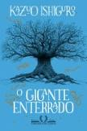
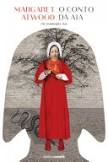
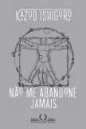
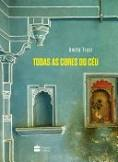
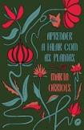

Harry Potter e a Ordem da Fênix

Sinopse
Parece impossível, mas, no bairro mais Muggle do mundo Muggle, Harry é emboscado por Dementors! Para salvar a
sua vida e a do primo Dudley, Harry não tem outra hipótese senão usar magia - mesmo sabendo que isso
significará a sua expulsão mais que certa de Hogwarts. Enquanto o Ministério da Magia continua a não
acreditar que o terrível Senhor das Trevas está de volta, Voldemort e os seus fiéis Devoradores da Morte já
começaram a preparar o seu regresso ao poder. Porém, há uma nova esperança: uma antiga ordem secreta, da
qual os pais de Harry fizeram parte, voltou a organizar-se e Dumbledore está atento.
Fonte: Google Books
| Data |
Autor |
Idioma Original |
Gêneros |
Número de páginas |
Editora |
| 21 de junho de 2003 |
J. K. Rowling |
Inglês |
Romance, Ficção juvenil, Literatura fantástica |
750 |
Pottermore Publishing |
Voltar para o topo
O Gigante Enterrado

Sinopse
Prêmio Nobel de Literatura 2017
Em seu primeiro romance em dez anos, o autor do best-seller Resíduos do dia envereda pelo universo da fantasia para abordar temas universais como o amor, a guerra e a memória.
Uma terra marcada por guerras recentes e amaldiçoada por uma misteriosa névoa do esquecimento. Uma população desnorteada diante de ameaças múltiplas. Um casal que parte numa jornada em busca do filho e no caminho terá seu amor posto à prova - será nosso sentimento forte o bastante quando já não há reminiscências da história que nos une?
Épico arturiano, o primeiro romance de Kazuo Ishiguro em uma década envereda pela fantasia e se aproxima do universo de George R. R. Martin e Tolkien, comprovando a capacidade do autor de se reinventar a cada obra. Entre a aventura fantástica e o lirismo, O gigante enterrado fala de alguns dos temas mais caros à humanidade: o amor, a guerra e a memória.
Fonte: Google Books
| Data |
Autor |
Idioma Original |
Gêneros |
Número de páginas |
Editora |
| 03 de março de 2015 |
Kazuo Ishiguro |
Inglês |
Romance, Fantasia, Literatura fantástica, Ficção histórica, Alta fantasia |
400 |
Companhia das Letras |
Herdeiras do Mar
Sinopse
A história comovente e desconhecida das mulheres coreanas na Segunda Guerra Mundial ganha vida neste romance épico, profundo e sensível sobre duas irmãs e um amor capaz de atravessar gerações.
"Sempre olhe para a praia quando voltar à superfície, senão você pode perder o norte", a mãe disse, virando o rosto de Hana para que ela enxergasse a terra. Na areia, sua irmã estava sentada, protegendo os baldes que continham a pesca do dia. "Procure sua irmã depois de cada mergulho. Nunca se esqueça disso. Se puder vê-la, você estará segura."
Quando Hana nasceu, a Coreia já estava sob ocupação japonesa, e por isso a garota sempre foi considerada uma cidadã de segunda classe, com direitos renegados. No entanto, nada diminui o orgulho que tem de sua origem. Assim como sua mãe, Hana é uma haenyeo, ou seja, uma mulher do mar, que trabalha por conta própria seguindo uma tradição secular. Na Ilha de Jeju, onde vivem, elas são as responsáveis pelo mergulho marinho — uma atividade tão perigosa quanto lucrativa, que garante o sustento de toda a comunidade.
Como haenyeo, Hana tem independência e coragem, e não há ninguém no mundo que ela ame e proteja mais do que Emi, sua irmã sete anos mais nova. É justamente para salvar Emi de um destino cruel que Hana é capturada por um soldado japonês e enviada para a longínqua região da Manchúria.
A Segunda Guerra Mundial estava em curso e, assim como outras centenas de milhares de adolescentes coreanas, Hana se torna uma "mulher de consolo": com apenas dezesseis anos, ela é submetida a uma condição desumana em bordéis militares. Apesar de sofrer as mais inimagináveis atrocidades, Hana é resiliente e não vai desistir do sonho de reencontrar sua amada família caso sobreviva aos horrores da guerra.
Em Herdeiras do mar, Mary Lynn Bracht lança mão de uma narrativa tocante e inesquecível para jogar luz sobre um doloroso capítulo da Segunda Guerra Mundial ainda ignorado por muitos.
Fonte: Google Books
| Data |
Autor |
Idioma Original |
Gêneros |
Número de páginas |
Editora |
| 18 de janeiro de 2018 |
Mary Lynn Bracht |
Inglês |
Romance, Ficção histórica, Novela de guerra |
304 |
Editora Paralela |
Norwegian Wood
Sinopse
Com mais de quatro milhões de cópias vendidas no Japão, é um romance de formação com toques autobiográficos, ambientado na Tóquio do final da década de 1960, que narra a iniciação amorosa do jovem estudante de teatro Toru Watanabe. Solitário, ele mora em um alojamento estudantil só para homens e dedica seu tempo a identificar e refletir sobre as peculiaridades dos colegas. Um dia, Toru reencontra um rosto de seu passado: Naoko, antiga namorada de seu grande amigo de adolescência Kizuki antes deste cometer suicídio. Marcados por essa tragédia em comum, os dois se aproximam e constroem uma relação delicada onde a fragilidade psicológica de Naoko se torna cada vez mais visível até culminar com sua internação em um sanatório.
Tem início então um período de grande dilema para o jovem Toru: uma encruzilhada entre o compasso de espera pela recuperação de Naoko e os encantos de uma outra vida, mais vibrante, personificada pela exuberante e liberada Midori mas também por sua relação com uma mulher mais velha, Reiko. Ambientado em meio à turbulência política da virada dos anos 1960 para os anos 1970, Norwegian Wood, como a canção dos Beatles que lhe empresta o título, é uma balada de amor e nostalgia cuja rara beleza confirma Murakami como uma das vozes mais talentosas da ficção contemporânea.
Fonte: Google Books
| Data |
Autor |
Idioma Original |
Gêneros |
Número de páginas |
Editora |
| 1987 |
Haruki Murakami |
Japonês |
Romance, Romance de amor, Bildungsroman, Ficção literária |
360 |
Companhia das Letras |
O Conto da Aia

Sinopse
O romance distópico O conto da aia, de Margaret Atwood, se passa num futuro muito próximo e tem como cenário uma república onde não existem mais jornais, revistas, livros nem filmes. As universidades foram extintas. Também já não há advogados, porque ninguém tem direito a defesa. Os cidadãos considerados criminosos são fuzilados e pendurados mortos no Muro, em praça pública, para servir de exemplo enquanto seus corpos apodrecem à vista de todos. Para merecer esse destino, não é preciso fazer muita coisa – basta, por exemplo, cantar qualquer canção que contenha palavras proibidas pelo regime, como “liberdade”. Nesse Estado teocrático e totalitário, as mulheres são as vítimas preferenciais, anuladas por uma opressão sem precedentes. O nome dessa república é Gilead, mas já foi Estados Unidos da América. Uma das obras mais importantes da premiada escritora canadense, conhecida por seu ativismo político, ambiental e em prol das causas femininas, O conto da aia foi escrito em 1985 e inspirou a série homônima (The Handmaid’s Tale, no original), produzida pelo canal de streaming Hulu em 2017. As mulheres de Gilead não têm direitos. Elas são divididas em categorias, cada qual com uma função muito específica no Estado. A Offred coube a categoria de aia, o que significa pertencer ao governo e existir unicamente para procriar, depois que uma catástrofe nuclear tornou estéril um grande número de pessoas. E sem dúvida, ainda que vigiada dia e noite e ceifada em seus direitos mais básicos, o destino de uma aia ainda é melhor que o das não-mulheres, como são chamadas aquelas que não podem ter filhos, as homossexuais, viúvas e feministas, condenadas a trabalhos forçados nas colônias, lugares onde o nível de radiação é mortífero. Com esta história assustadora, Margaret Atwood leva o leitor a refletir sobre liberdade, direitos civis, poder, a fragilidade do mundo tal qual o conhecemos, o futuro e, principalmente, o presente.
Fonte: Google Books
| Data |
Autor |
Idioma Original |
Gêneros |
Número de páginas |
Editora |
| 1985 |
Margaret Atwood |
Inglês |
Romance, Ficção científica, Ficção especulativa, Tragédia, Literatura fantástica, Ficção distópica, Ficção científica feminista |
368 |
Editora Rocco |
O Beijo do Rio

Sinopse
As cortinas se abrem para um caso inesperado... Com protagonismo negro e bissexual, o eletrizante thriller psicológico de Stefano Volp traz a história de um jornalista que vai investigar a morte de seu melhor amigo de infância, enquanto lida com visões desconcertantes, segredos perigosos e traumas do passado.
"O sucesso de Volp não é uma coincidência. Ele escancara fragilidades e faz os leitores se identificarem." – Revista Rolling Stone
Mergulhar nos pecados do passado pode ser uma viagem só de ida.
O solitário Daniel é um jornalista negro que escreve para a seção investigativa de uma revista independente. Ao saber da trágica morte de Romeu, seu melhor amigo de infância, ele decide voltar à sua cidade natal, Ubiratã, para investigar o caso, o qual a polícia prontamente concluiu ter sido suicídio.
Após dez anos longe, Daniel se vê de volta à pequena cidade onde cresceu. Seu regresso à casa é problemático. Bissexual, ele sempre se sentiu deslocado naquele bairro separado do resto da cidade por um rio. A nova companhia de teatro, figuras políticas da cidade, os membros de uma seita religiosa e famílias que não querem ser incomodadas são viradas de cabeça para baixo com a presença do jornalista e sua investigação criminal.Há, também, algo do passado de Daniel de que ele não consegue – ou não quer – lembrar. Em vez de memórias, tem visões de um menino, que aparece para ele com mensagens indecifráveis. Agora, quanto mais se aproxima da verdade, mais visões tem e mais ele deve descobrir sobre si mesmo.
Fonte: Google Books
| Data |
Autor |
Idioma Original |
Gêneros |
Número de páginas |
Editora |
| 15 de julho de 2022 |
Stefano Volp |
Português |
Ficção, Suspense, Literatura LGBT |
331 |
HarperCollins |
Não me abandone jamais

Sinopse
Prêmio Nobel de Literatura 2017
Kathy H. tem 31 anos e está prestes a encerrar sua carreira de "cuidadora". Enquanto isso, ela relembra o tempo que passou em Hailsham, um internato inglês que dá grande ênfase às atividades artísticas e conta, entre várias outras amenidades, com bosques, um lago povoado de marrecos, uma horta e gramados impecavelmente aparados. No entanto, esse internato idílico esconde uma terrível verdade: todos os "alunos" de Hailsham são clones, produzidos com a única finalidade de servir de peças de reposição. Assim que atingirem a idade adulta, e depois de cumprido um período como cuidadores, todos terão o mesmo destino - doar seus órgãos até "concluir". Embora à primeira vista pareça pertencer ao terreno da ficção científica, o livro de Ishiguro lança mão desses "doadores", em tudo e por tudo idênticos a nós, para falar da existência. Pela voz ingênua e contida de Kathy, somos conduzidos até o terreno pantanoso da solidão e da desilusão onde, vez por outra, nos sentimos prestes a atolar. Finalista do Man Booker Prize 2005.
Fonte: Google Books
| Data |
Autor |
Idioma Original |
Gêneros |
Número de páginas |
Editora |
| 05 de abril de 2005 |
Kazuo Ishiguro |
Inglês |
Romance, Ficção científica, Ficção especulativa |
344 |
Companhia das Letras |
Todas as cores do céu

Sinopse
Aos dez anos, Mukta é forçada a seguir um ritual de sua casta, que, essencialmente, a torna uma prostituta. Para salvá-la deste horrível destino, um homem a resgata e lhe dá um lar. Tara, filha dele, cria um laço especial com a criança recém-chegada — um vínculo digno de irmãs. A amizade sofre um baque definitivo, entretanto, quando Mukta é sequestrada. Anos depois, vivendo nos Estados Unidos, Tara retorna à Índia para encontrar a amiga que, ao que tudo indica, foi submetida novamente à prostituição. Mas a extrema pobreza em Bombaim se mostra uma realidade mais difícil do que Tara consegue suportar.
Relato emocionante e realista da Índia contemporânea, Todas as cores do céu mostra como o sistema de castas explora os mais fracos, e como o amor nos faz buscar a reparação para nossos atos mais horríveis, vencendo barreiras impenetráveis.
Fonte: Google Books
| Data |
Autor |
Idioma Original |
Gêneros |
Número de páginas |
Editora |
| 30 de junho de 2015 |
Amita Trasi |
Inglês |
Amadurecimento |
384 |
HarperCollins Brasil |
Aprender a falar com plantas

Sinopse
"Marta Orriols tem a capacidade de fixar com palavras a transitoriedade e o imprevisto das circunstâncias do dia a dia." El País Paula acredita que tem a rotina controlada: um relacionamento que já dura quinze anos, um trabalho como médica neonatologista, com a responsabilidade da vida nas mãos. Mas essa realidade desaba quando seu companheiro confessa que tem outra mulher e, horas depois, sofre um acidente fatal. Agora, ela precisa aprender a lidar com o luto, com o rancor, com a inaptidão para novos afetos e com um apartamento repleto de plantas deixadas por alguém que representava o seu laço humano mais íntimo.
Fonte: Google Books, Google
| Data |
Autor |
Idioma |
Gêneros |
Número de páginas |
Editora |
| outubro de 2018 |
Marta Orriols |
Catalão |
Ficção |
240 |
Dublinense |